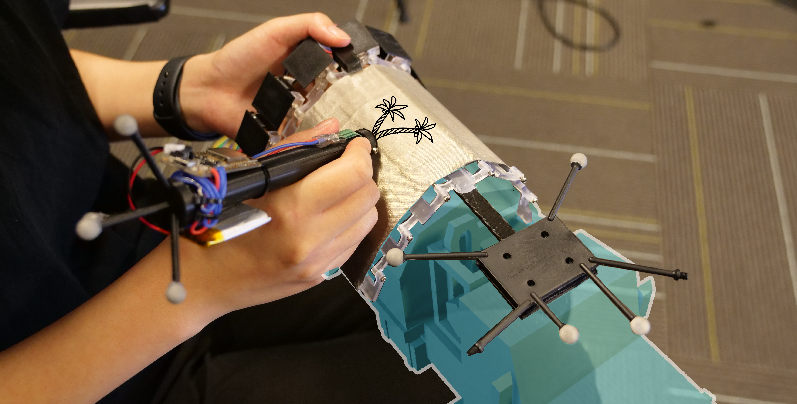
A shape-changing physical surface follows virtual geometry to support precise sketching in VR.
Abstract
VRScroll is a shape-changing device that provides a physical drawing surface for precise sketching on virtual objects.
Seven independently controlled flaps approximate the local geometry of a virtual surface. The resulting physical contact constrains movement and provides friction and haptic feedback while drawing.
A user study found more precise tracing and clearer sketches with the dynamic shape display. The project also appeared as a CHI 2024 demonstration and an IEEE VR 2023 poster.
Video
Result Highlights
The 12-participant VRST 2024 study evaluated physical surface support for tracing and free sketching. VRScroll improved quality and experience, but tracing took longer.
VRScroll Hardware
VRScroll is a handheld shape-changing surface with seven linked flaps driven by six encoded DC motors. Changing the angles between flaps approximates planar, angled, and curved virtual geometry. A flexible PTFE sheet and woven fabric provide a continuous drawing surface.
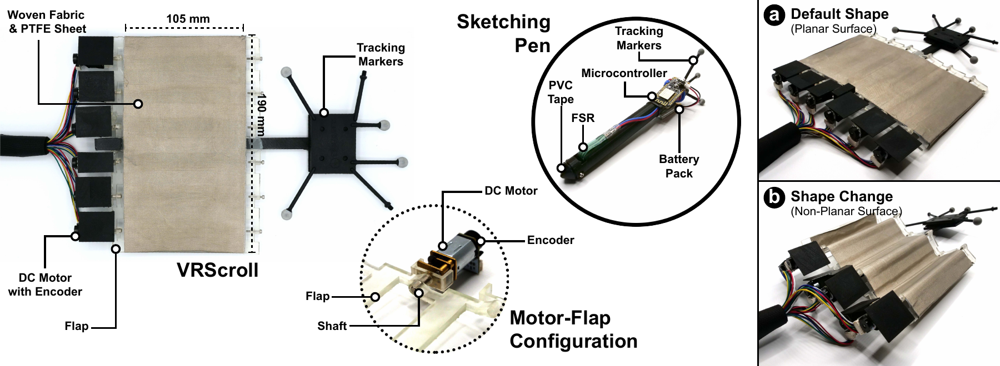
| Component | Specification |
|---|---|
| VRScroll device | 190 × 120 × 4 mm; 157 g |
| Shape change | 7 flaps, 6 motorized joints; about 280° rotation range per flap |
| Rotation speed | About 180 ms per 90° |
| Surface covering | 190 × 105 mm flexible PTFE sheet and woven fabric |
| Sketching pen | 170 mm long, 8.5 mm radius; 47 g; force-sensitive tip |
A force-sensitive resistor between the pen tip and barrel detects surface contact. The pen sends force measurements wirelessly, while reflective markers on the pen and VRScroll enable 6-DOF tracking with OptiTrack.
Sketching Interaction
- Select: move VRScroll close to the virtual object to choose a drawing surface.
- Transform: the flaps change shape and the virtual surface snaps into alignment with the physical device.
- Sketch: draw on the physical surface with the force-sensing pen; strokes appear on the virtual object.
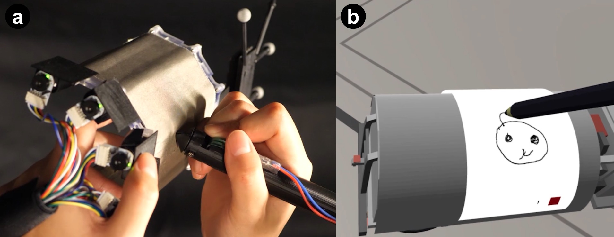
The non-dominant hand positions the surface while the dominant hand controls the pen. Physical contact provides friction and resistance, constrains depth, and gives the user a tangible reference for the virtual geometry.
Study Design
Twelve participants compared VRScroll with an InAir baseline. InAir used a narrow 20 g sidebar in the non-dominant hand to position the virtual surface, but supplied no physical drawing surface. Both conditions used a tracked pen and a Meta Quest 2 headset.
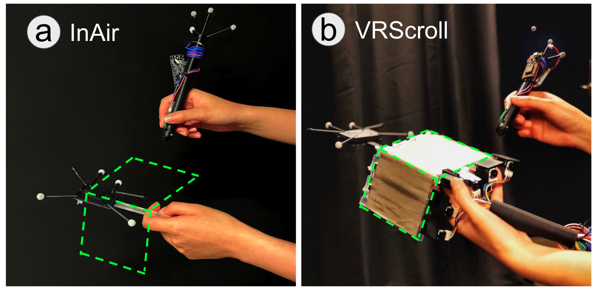
- Five surfaces: planar, convex angled, concave angled, convex curved, and concave curved.
- Tracing: a 35 mm-radius circle and a 70 × 70 mm triangle, with five repetitions per trajectory and surface for each method—100 trials per participant.
- Freestyle sketching: one sketch for each method–surface combination, with 30 external reviewers rating clarity on a 10-point scale.
- Measurements: mean positional deviation (MPD), mean fractal dimension (MFD), time, stroke count, workload, and experience ratings.
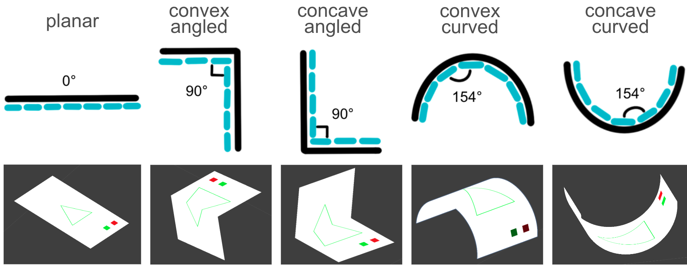
The Unity application ran on an Intel Core i7 / RTX 3080 laptop. OptiTrack sampled at 360 Hz, with a reported mean tracking error of 0.28 mm. Method and trajectory order were counterbalanced.
Tracing Precision and Smoothness
Mean positional deviation fell from 2.05 mm with InAir to 1.22 mm with VRScroll—a reported 40.49% improvement in precision (p < 0.001). Lower MPD means the stroke stays closer to the target trajectory.
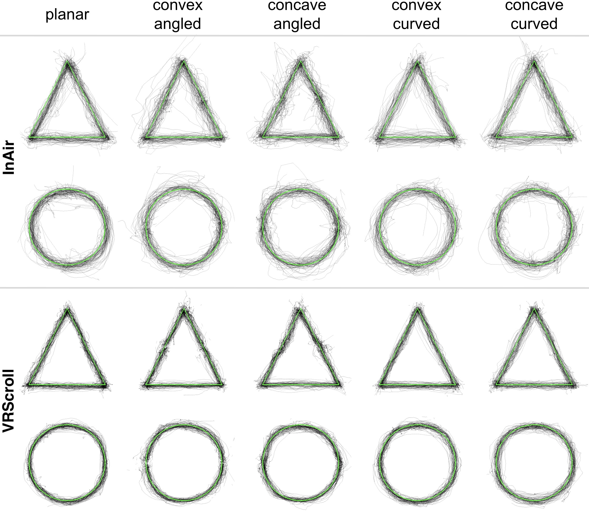
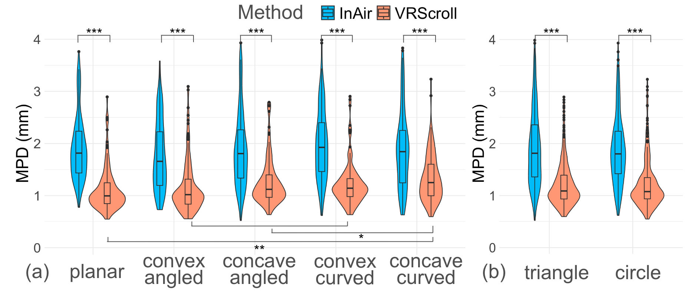
VRScroll also produced smoother strokes. For triangles, mean MFD was 0.76 versus 0.94; for circles, 0.75 versus 0.85 for VRScroll and InAir respectively. Lower MFD indicates a smoother stroke. Physical support helped across shapes, but concave surfaces showed less precision benefit than planar and convex surfaces.
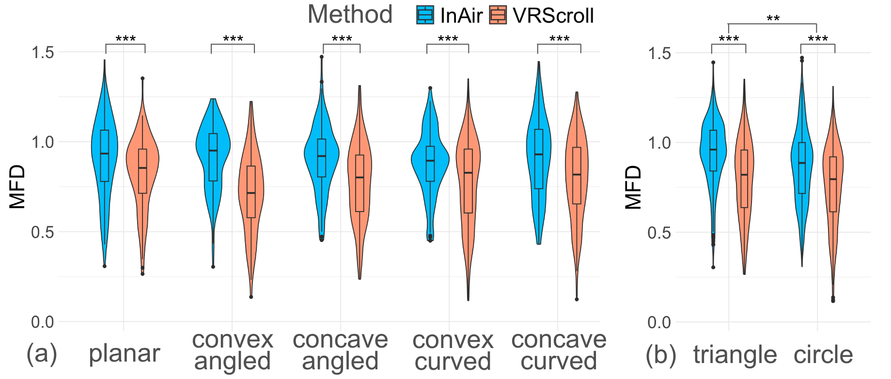
Speed and Stroke Tradeoffs
| Measure | VRScroll | InAir |
|---|---|---|
| Circle completion time | 11.10 s | 7.96 s |
| Triangle completion time | 14.70 s | 7.37 s |
| Circle stroke count | 5.85 | 2.56 |
| Triangle stroke count | 6.11 | 2.43 |
The physical surface improved tracing quality, but did not make tracing faster. Participants took longer and used more separate strokes. Angled surfaces generally required more time than planar or curved surfaces. These findings suggest a quality–speed tradeoff rather than a universal efficiency gain.
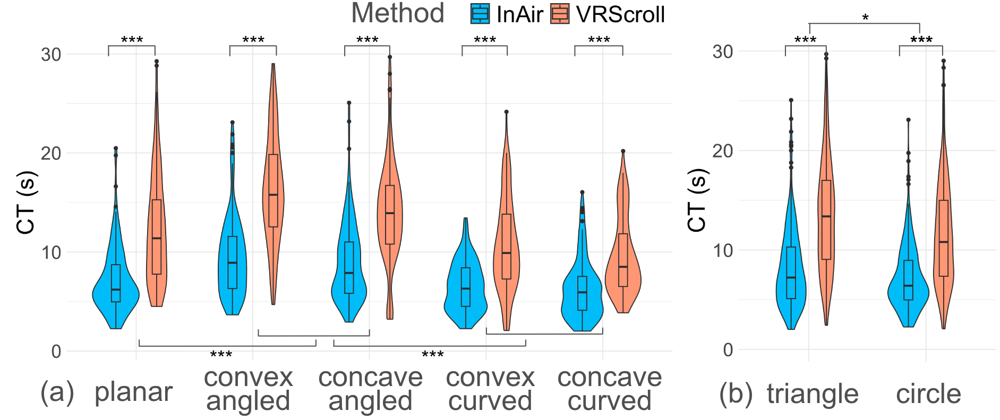
Freestyle Sketching Results
Thirty external reviewers rated sketch clarity on a scale from 1 to 10. The reported mean increased from 4.93 for InAir to 5.91 for VRScroll (p < 0.001). Sketches with physical support showed more coherent lines and finer details.
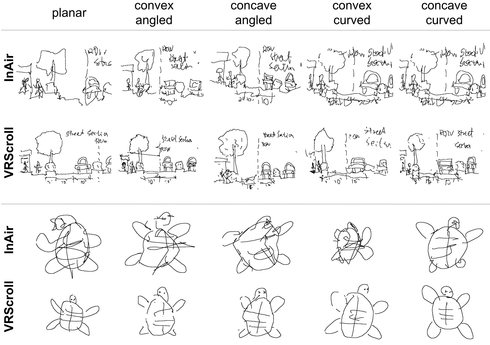
Within VRScroll, planar surfaces had the highest reported mean clarity rating (6.38/10). Surface geometry mattered: physical concave features could restrict the available pen movement, and participants sometimes collided with the surface when holding the pen at an angle.
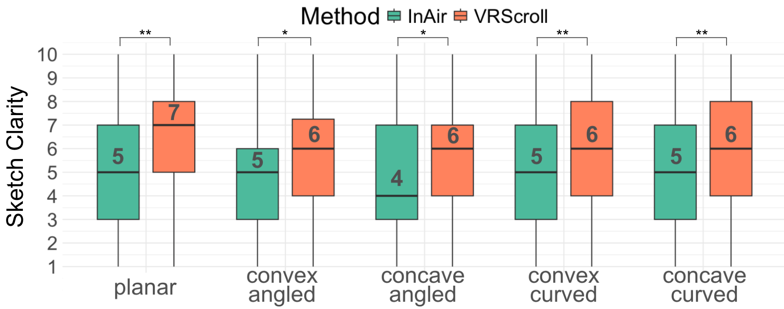
Experience and Design Implications
8 of 12 participants preferred VRScroll. Of those eight, five mentioned increased precision and four valued physical contact. Seven participants described the sketching experience as realistic. VRScroll was rated significantly more realistic, intuitive, controllable, comfortable, and confidence-supporting than InAir; overall NASA-TLX workload did not differ significantly.
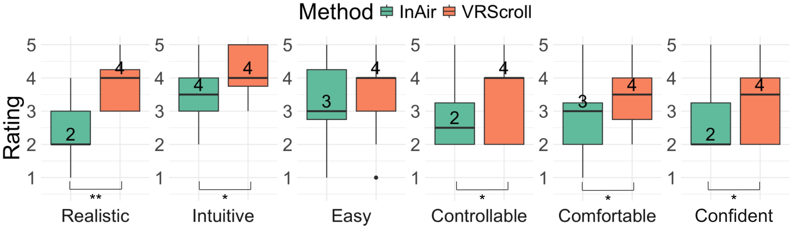
- Use physical support where precision matters, and retain mid-air input for actions that do not require surface contact.
- Choose which geometry to reproduce: concave physical features can obstruct a pen even when the virtual surface looks usable.
- Treat shape as a guide as well as a replica; physical ridges or paths could deliberately constrain useful pen movements.
- The study used controlled surfaces and a seven-flap device. More complex tasks, finer shape resolution, and longer use need further evaluation.
Related Publications
Citation
@inproceedings{ying2024enhancing,
author = {Ying, Wen and Heo, Seongkook},
title = {Enhancing VR Sketching with a Dynamic Shape Display},
booktitle = {Proceedings of the 30th ACM Symposium on Virtual Reality Software and Technology},
year = {2024},
doi = {10.1145/3641825.3687714}
}